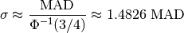
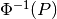
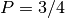

mad_std¶
-
astropy.stats.mad_std(data, axis=None) [edit on github][source]¶ Calculate a robust standard deviation using the median absolute deviation (MAD).
The standard deviation estimator is given by:

where  is the normal inverse cumulative distribution function evaluated at probability .
Parameters: data : array-like
Data array or object that can be converted to an array.
axis : int, optional
Axis along which the medians are computed. The default (axis=None) is to compute the median along a flattened version of the array.
Returns: result : float
The robust standard deviation of the data.
Examples
>>> from astropy.stats import mad_std >>> from astropy.utils import NumpyRNGContext >>> from numpy.random import normal >>> with NumpyRNGContext(12345): ... data = normal(5, 2, size=(100, 100)) ... mad_std(data) 2.02327646594